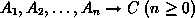

(91) モデル分散型 MGTP / N ( KL1 版 )
マ シ ン：PIM
環 境：PIMOS
言 語：KL1
ソース量：50 KB
文 書：ユーザーズマニュアル ( 日本語・英語 )
概要
ホーン節を対象にするノングランド版定理証明器 MGTP / N の処理系
特徴
モデルコピー型とモデル分散型の二種類ある．両者の違いは，生成するモデル
要素の保持の仕方にあり，前者は要素のコピーを全てのプロセッサが保持する
のに対し，後者は，モデル要素を各プロセッサに分散して保持する．前者では
証明に必要なデータ ( モデル要素 ) は全て，各プロセッサが局所的に保持し
ているので，データ転送のための通信量を低くできるのに対し，後者では，デー
タは分散配置されているので，必要に応じてデータを集めなければならず，通
信量は増大する．一方，後者では要素を蓄えるための容量を，プロセッサ数が
増えるに従い大きくすることができる ( メモリ・スケーラビリティ ) 利点が
ある．
モデルコピー型は，おおよそ十万個までのアトムを蓄えることができ ( PIM/m
の場合 )，推論速度も優れているので，十万個までの証明はモデルコピー型で，
それ以上の証明はモデル分散型で行なうことが望ましい．
機能
MGTP/N ( Model Generation Theorem Prover/Non-ground Version ) は，モデ
ル生成法に基づく一階述語論理の定理証明システムであるが，対象をホーン節
に限定している．問題は以下のような含意形式の節で与えられる．

ここで，→ の左側 ( 前件部 ) はアトムの連言 ( , ) である．また，右側
( 後件部 ) は高々一つのアトムからなり，空の後件部は，矛盾を表す．
n = 0 の時は，初期モデル ( ファクト群 ) を表す．初期モデルを種
とし，上記の節に従って左辺から右辺へ前向きに推論が進められる．
また，節中から KL1 呼び出しが可能であり，アトムの重さによるソーティン
グ戦略，アトムをパターンによって除去する削除戦略を指定することができる．
ホーン節しか扱っていないが，分離の規則に関する問題をはじめとした多くの
数学的問題を解くことができる．
ＦＴＰ
- README.
- モデル分散型 MGTP/N ( KL1 版 ) [565K]

www-admin@icot.or.jp